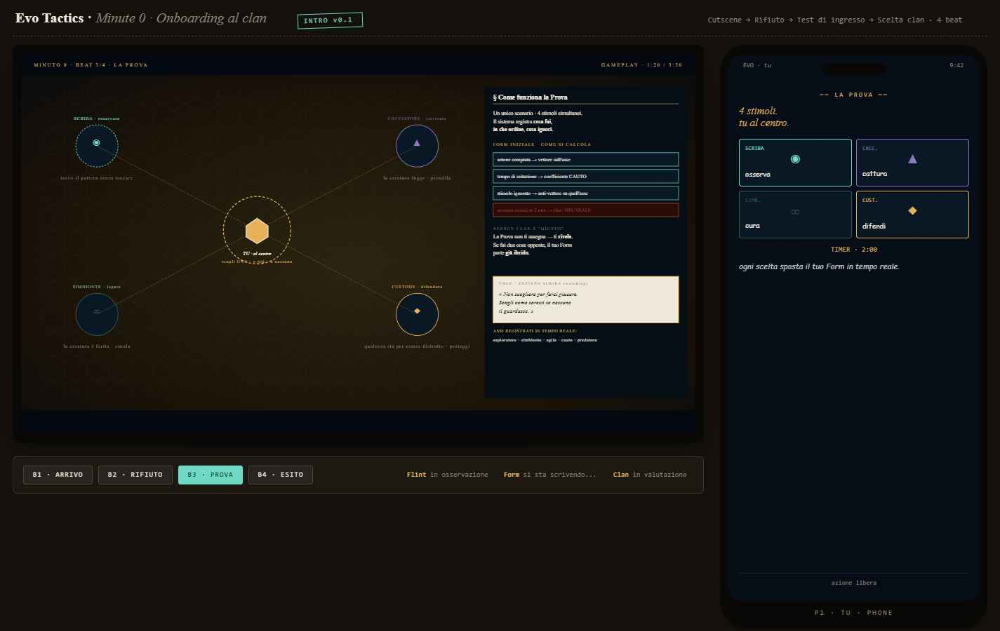
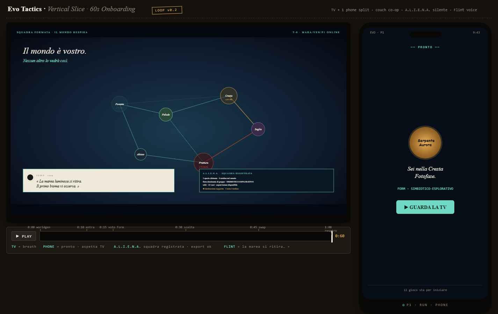
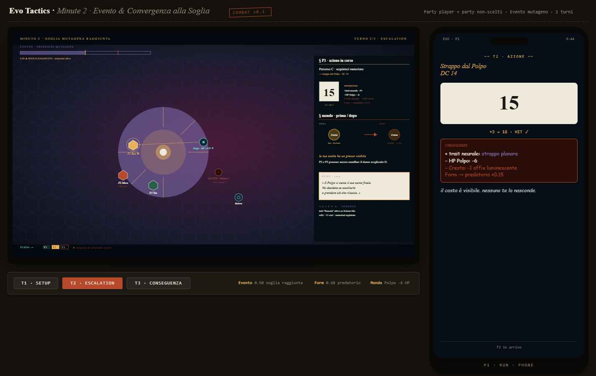
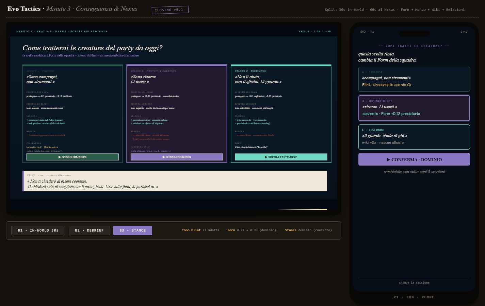

Un vertical-slice concept, scritto in parallelo al Design Freeze v0.9 di Evo Tactics. Non un update. Un sketchbook che solleva 3 domande al design canonico.
Il Freeze v0.9 (A3) resta autorità. Nulla qui lo sostituisce.
La roadmap canonica (M1–M6) resta il piano. Questo è sketchbook.
3 concept da valutare come possibili estensioni future, zero impatto immediato.
Destinazione consigliata: docs/archive/concept-explorations/2026-04/
Arrivo · Rifiuto · Prova · Esito. 4 beat narrativi, no combat.
Meta-ecosistema, voti Form sul phone, creature collegate.
d20 vs DC, evento mutageno, "4 vie · nessuna giusta".
Form reveal, timeline bioma, scelta relazionale.

la Radura convoca. 4 clan osservano in silenzio.
«non sei pronto per nessuno di noi.» 4/4 rifiutano.
2 minuti, 4 stimoli simultanei. il Form iniziale viene letto dalle azioni.
un clan ti accoglie. Flint assegnato. Form parte ibrido.

meta-ecosistema → bioma → 4 creature collegate.
ogni player vota un asse dal telefono. squadra in diretta.
keystone, spillover, affix: leggibili prima di scegliere.
A.L.I.E.N.A. dati, Flint narra, mondo respira.

il bioma mostra il suo affix.
barra pressione → soglia. non-scelti reagiscono.
mondo spostato, party spostato, tutto leggibile.
acquisire un trait → il bioma perde un affix. costo visibile sul mondo.

party resta sul bioma. Flint chiude la scena.
timeline bioma aggiornata. wiki scritta da sola.
simbiosi / dominio / testimone. modifica Form + tono Flint + missioni future.
prossima sessione = mondo che ricorda.
Questi 4 slice sono stati scritti prima di leggere il Design Freeze v0.9. Le slide seguenti confrontano riga per riga quello che abbiamo disegnato con quello che il Freeze già definisce. È un esercizio di umiltà, non di giustificazione.
| Vertical slice (M2) | Freeze v0.9 | Stato |
|---|---|---|
| d20 vs DC, MoS +1 step ogni +5 | §7.1 identico | ✅ allineato |
| 3 turni (setup/escalation/conseguenza) | §26 B5: 3–5 round medi | ✅ allineato |
| Nessuna menzione di AP, PT, PP, SG, PI, PE | §7.1-7.2 cuore del sistema | ❌ grave |
| Nessun parry contestata, reazioni, status | §7.4 bleeding/fracture/disorient/rage/panic | ❌ grave |
| Nessun round loop planning→commit→resolution | §7.1 ADR-2026-04-15 architettura | ❌ grave |
| Trait "strappo planare" dato live in combat | §7.4 active_effects deferred Fase 3 | ❌ contraddice scope |
| "Costi visibili": Cresta −1 affix luminescente | §17 biomi come modifier, no cost-of-trait | 🆕 concept nuovo |
| Vertical slice | Freeze v0.9 | Stato |
|---|---|---|
| 5 assi (esplorativo/simbiotico/agile/cauto/predatorio) | §13 PF session: 4 assi MBTI (E/N/T/P) | ❌ sistema diverso |
| Form pentagono, update real-time in combat | §13.4 update lento fine sessione, forme ≠ psicologia simulata | ❌ contraddice filosofia |
| — | §15 VC metrics: aggro/risk/cohesion/setup/explore/tilt | 🆕 mai toccato |
| — | §14 Enneagramma (modulo secondario) | 🆕 mai toccato |
| — | §13 Forme 16 (shipping) | 🆕 mai toccato |
| Stance finale (simbiosi/dominio/testimone) modifica Form | — | 🆕 concept nuovo |
Il Form a 5 assi real-time è più semplice di quello del Freeze. Il Freeze ha MBTI(4) × Ennea(9) × VC(6) × Forme 16. Più ricco ma anche più pesante da comunicare.
| Vertical slice | Freeze v0.9 | Stato |
|---|---|---|
| Biomi: Cresta Fotofase, Soglia, Frattura/Abisso | §17: Desert, Cavern, Badlands (placeholder) | 🟡 inseribili |
| Specie: Polpo, Sciame, Micelia, Balena | §9: Dune Stalker, Sand Burrower, Echo Wing, Rust Scavenger (placeholder) | 🟡 inseribili |
| Foodweb visibile (4 creature collegate in UI) | §9-17 dati esistono, UI non specificata | 🟡 possibile |
| BiomeMemory cross-mission (affix persistenti) | §17 bioma modifica in missione, no persistenza | 🆕 lacuna potenziale |
| Spillover mutageno (creature che si contaminano) | — | 🆕 concept nuovo |
| Affix del bioma (luminescente, ipogeo, caustico) | §17.1 hazard + modifier (concetto simile) | 🟡 rinaming possibile |
skirmisher, vanguard, warden, artificer, invoker, harvester. Mai menzionati.
locomotion, offense, defense, senses, metabolism. Mai menzionati.
pierce/spin/chain/pulse/overdrive + twin_blades/arc_rod. Mai menzionati.
aggro/risk/cohesion/setup/explore/tilt. Mai menzionati.
5 PE → 1 PI, seed da elite/mating. Mai menzionati.
affinity, trust, nido slice. Mai menzionati.
generazione dinamica NPG. Mai menzionato.
Manca troppo del Freeze per chiamarlo vertical slice reale.
d20 vs DC, MoS +1 step ogni +5, 3–5 round. Basta.
Zero AP/PT/PP/SG. Zero round-loop. Zero parry/status. Trait active in combat (Fase 3 deferred). Form 5 assi miei vs 4 MBTI.
1. BiomeMemory cross-mission
2. Costo visibile del trait sul
mondo
3. Onboarding narrativo M0 + stance finale
A.L.I.E.N.A., Flint, biomi Cresta/Soglia/Frattura, spillover, TV+phone: sketchbook, non design utilizzabile.
1 pagina in docs/archive/concept-explorations/2026-04/
Formulata come possibile estensione di §17, con esempio concreto. Da valutare dopo il freeze combat (M1).
Come possibile estensione di §7.4 quando active_effects esce dal NOOP.
Idea: ogni trait attivato lascia una "impronta" sul bioma. Rientra nella filosofia del Freeze "ogni scelta build deve avere un costo" (§3).
"Ingresso al clan" come tutorial integrato, non pop-up.
Il Freeze non formalizza l'onboarding del player. Questo pattern (4 beat: arrivo/rifiuto/prova/esito) può essere un hook utile per M4 UX Shipping.
Tutte e tre vanno come exploration-note, mai come PR su file canonici. La governance decide se e quando triage.
Morale: non buildare mai raccomandazioni su dati che non hai letto. Adesso i dati ci sono — e cambiano la CTA.